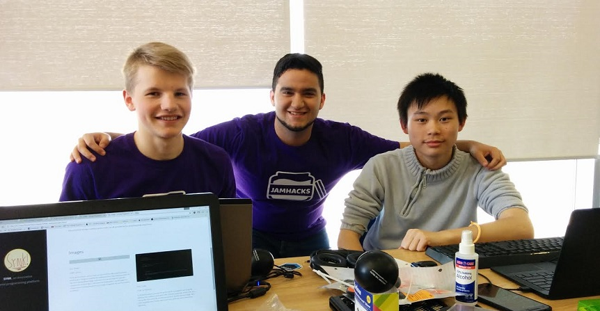
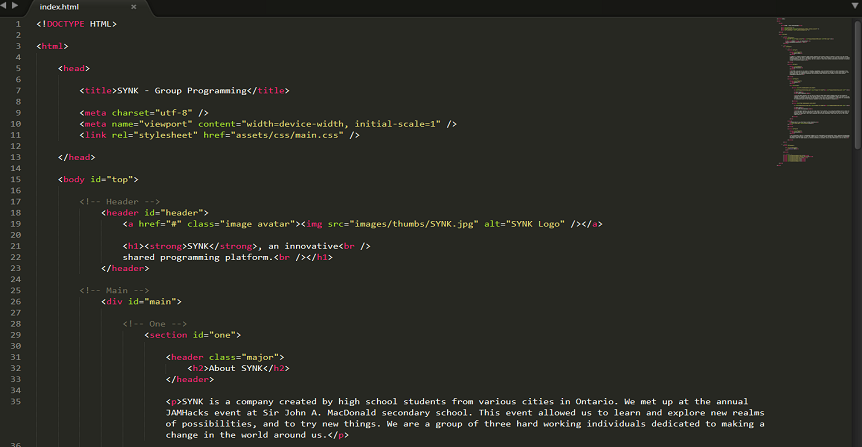

Welcome to SYNK
About SYNK
SYNK is a company created by high school students from various cities in Ontario. We met up at the annual JAMHacks event at Sir John A. MacDonald secondary school. This event allowed us to learn and explore new realms of possibilities and to try new things. We are a group of three hard working individuals dedicated to making a change in the world around us. We have all experienced the struggle of having to work in a group, but lacking the ability to have a reliable and convenient source of communication between our systems. This struggle inspired us to create a prototype for a solution. This program isn't fully polished, but SYNK is dedicated to seeing this project through and making our dreams a reality.
At SYNK, our goal is to create a reliable, dependable, and consistent platform in which programmers from around the world can collaborate on a project without the tedious work of having to ensure every user has the up-to-date file. Our approach eliminates any potential merge conflicts and creates an all around better programming experience for the end user. We use our knowledge of server to client communications to continiously check when a client has editted code. Within seconds, the code is editted on one client's computer, sent to the server, and to every client sharing that file. No matter how far apart, or how close, we are determined to providing the clients with the quickest, most efficient, and most reliable source of programming collaboration. We believe in the power of "collaborative programming", just like seen in the workplace or at hackathons. Together, we are exponentially better. Together, we can do much more. And together, we can change the world forever.
In our current rendition of this project, we are synchronizing the files across the computers. In later renditions of this project, we plan to merge some Google Docs functionality into Subline Text Editor such as cursors to increase user friendliness and functionality of the project. Unfortunately, due to the time constraint of the JAMHacks Hackathon, we were unable to do this modification this time around.

Our Team
SJAM Library
In the above picture, you can see our team of three high school students who are working on completing the software of our code sharing project. We are in the development stage, and each of us are working on seperate components of the project. Later into the development, we will begin to collaborate to incorporate each of our projects together for one final project to present.

Our Code
HTML for Website
In the above picture, you can see some code of our website. Sublime Text 3 editor was used to write the HTML, CSS and JavaScript code. In the code, you can see the index.html file and the code used to display the home page. This code, alongside the CSS and JavaScript, forms what you see on the screen right now. Other files include main.css, main.js, util.js, and a few other files.
In conclusion, SYNK is a determined company run by individuals from different cities, different backgrounds, and different experiences. We have the common goal of a united nation through the collaboration of programming knowledge. With the right people, we believe anything is possible. And we hope SYNK plays a part in this.
Thank you to everyone for the continued support, and we wish you the best of luck on your programming projects.
Back to Top
{kind=link}
{kind=link}